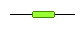
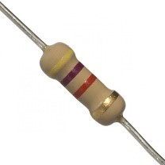

Una resistencia es un operador electrónico, cuya principal función es la de disminuir la intensidad de corriente que pasa por un punto del circuito en el que se encuentra (con ello, ayudará a proteger otros elementos que haya en el circuito).
A mayor valor de la resistencia, menor intensidad atravesará el circuito. Recíprocamente, a menor valor de resistencia, mayor intensidad circulará por el circuito. No te pierdas esta animación.
Hay dos tipos de resistencias: resistencias fijas y variables. Las resistencias fijas tienen un valor que no cambia, pero las variables pueden ajustarse a voluntad del usuario, normalmente con un mando giratorio o deslizante.
Medida
La resistencia se mide en ohmios (Ω). Aunque, en ocasiones, podemos tener que utilizan también múltiplos del ohmio:
Kiloohmio: 1 KΩ = 1.000 Ω
Megaohmio: 1 MΩ = 1.000.000 Ω
Megaohmio: 1 MΩ = 1.000.000 Ω
En argot de electrónica se suele utilizar la notación XKY ó XMY, en la que X e Y son dos números entre 0 y 9, leyéndose entonces X,Y kiloohmios o X,Y megaohmios. Por ejemplo, 2K3 y 4M7 los leeríamos, respectivamente, como 2,3 kΩ y 4,7MΩ.
NOTA: esta notación no es única en electrónica, seguramente has visto algo parecido a esto:

Observa el uso de la "K" para querer decir "mil".